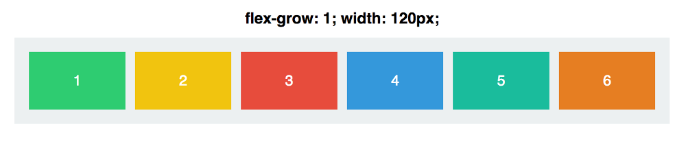

用五颜六色的gif图进一步解释Flexbox如何工作
上一次我们以基础的Flexbox属性：flex-direction，justify-content，align-items和align-self为开始介绍Flexbox。
对于创建基本的布局这些指令足够强大了。但是一旦你开始用Flexbox来搭建网页，你需要更深入地了解它以将其潜力最大化。
现在让我们深入了解Flexbox如何设置尺寸大小——以及你如何驾驭它以搭建响应式的优美的布局。
属性1：Flex-Basis
在上一篇文章，我们讨论的大多数是应用到容器元素上的属性。这次，我们将仅研究子元素上如何计算大小。
在我看来，我们的第一个属性是诸多Flexbox教程中解释的最糟糕的属性之一。
但是，不要担心，它事实上相当直观的。
Flex-basis控制一个元素的默认大小，即在被其他属性操纵之前（这部分将之后介绍）。
下面的这张gif图表明它是能和width属性互换的：
但是使flex-basis与width不同的是它要搭配我们的老朋友flex轴：

flex-basis影响一个元素在主轴上的大小。
让我们看看如果保持flex-basis不变，但是切换主轴的方向会发生什么：
注意这个过程中我们从手动设置高度切换到手动设置宽度。因此flex-basis决定width或者height，取决于flex-direction的值。
属性2：Flex Grow
让我们开始复杂点的内容。
首先，我们将我们的小方块设置相同的宽度，120px：

现在，当谈到名为flex-grow的属性，它默认为0。这意味着不允许这些方块通过增大来占据容器元素的空间。
这是什么意思？好吧，让我们尝试将每个方块的flex-grow增加为1：

这些方块共同占满了容器元素的全部宽度，而且它的空间均匀地分配给了每个方块。flex-grow覆写了width的值。
但是，关于flex-grow令人困惑的地方是它的值的真正含义是什么。flex-grow: 1实际上意味着什么？
好吧，下图是如果我们将每个方块的flex-grow都设为999看起是什么样：

这。。。不是完全一样嘛。
这是因为flex-grow不是一个绝对值——它是相对的。
重要的是，不是flex-grow的值本身，而是相对于其他方块的值。
如果我们将每个方块的flex-grow设置为1，然后调整方块#3的flex-grow，我们就可以看到变化了：
为了真正理解这里发生了什么，让我们快速介绍下一些（基础）数学知识。
每个方块的flex-grow初始值都是1。如果我们将每个方块的flex-grow值加起来，总和是6。因此容器元素将被分成6个独立的部分。每个方块增大到填满容器元素可用空间的1/6。
当我们将方块#3的flex-grow设置为2时，容器元素现在被分成7个不同的部分，因此flex-grow属性的总和是 1 + 1 + 2 + 1 + 1 + 1。
接着方块#3占据其中的2/7空间，其他的都是1/7。
当我们将方块#3的flex-grow设置为3时，容器元素被分成了8个部分（1 + 1 + 3 + 1 + 1 + 1），然后方块#3得到3/8，剩下的得到1/8。
等等。。。
Flex-grow全部都是关于比例分配。如果我们给每个方块设置flex-grow:4，然后方块#3设置为flex-grow:12，我们将得到和分别设置1和3一样的结果：

重要的是每个方块的flex-grow的值与其他方块的比例。
最后一点，记住就和flex-basis一样，flex-grow应用在主轴上。我们的方块增加的仅仅是宽度，除非我们将flex-direction设置为column。
属性3：Flex Shrink
与flex-grow相反，flex-shrink决定一个方块被允许收缩到何种程度。
它只在元素不得不收缩以适应容器时起作用——比如当容器太小的时候。
它的主要用途是指定哪些元素可以收缩，而哪些则不行。每个方块的flex-shrink的默认值都是1——这意味着在盒空间缩小时它们都进行收缩。
让我们看看实际效果。在下面的gif图中，每个方块的flex-grow值为1，因此它们填满了容器，以及flex-shrink值为1，允许它们进行收缩。
现在让我们将方块#3的flex-shrink值设为0。这将禁止它进行收缩，因此尽管它会增大以适应容器，它会拒绝降至给它设置的120px宽度以下。
flex-shrink的默认值是1，这意味着你的元素会进行收缩除非你告诉它们不要收缩。
同样的，flex-shrink也是关于比例分配。如果一个方块的flex-shrink值为6，并且其他方块的flex-shrink值为2，那么在空间压缩时前面那个方块缩的放速度会是其他方块的3倍。
注意这里的措辞：拥有3倍flex-shrink值的方块会以3倍的速度收缩。但是这不意味着它会收缩宽度的1/3。
稍等，我们将深入收缩和增大如何工作。但首先，我们先讨论最后一个属性，然后将所有东西整合在一起。
属性4：Flex
flex是flex-grow，flex-shrink和flex-basis的简写——所有这些都整合在一起了。
它的默认值是0(flex-grow)，1(flex-shrink)以及auto(flex-basis)。
对于我们最后的例子，让我们简化为两个方块。
以下是它们的属性：
|
|
它们两个拥有相同的flex-basis。这意味着如果有足够空间容纳它们（容器的宽度为600px再加上margin和padding的空间），它们将都是300px宽。
但由于方块会扩大，方块#1（拥有更大的flex-grow）会以两倍速增大。当空间缩小时，方块#2（拥有更大的flex-shrink）会以两倍速收缩。
现在将所有东西整合在一起：
flex-shrink和flex-grow如何工作
这是可能引起困惑的地方：当方块#1增大时，它不会增大为方块#2的两倍。同样的，当方块#2收缩时，它不会收缩为方块#1的1/2——尽管它们的flex-shrink比例是2:1。
不是它们的大小是2:1或者是1:2，而是它们收缩或者扩大的速度。
一些数学计算
容器的初始宽度为640px。在除去容器两边的20px的padding后，留下了足够的空间让两个方块都恢复为flex-basis的宽度300px。
当容器的宽度设置为430px时，我们失去了210px的空间。flex-shrink值为1的方块#1损失了70px，而值为2的方块#2则损失了140px。
当容器宽度缩减到340px时，我们损失了300px的空间。方块#1损失了100px，而方块#2损失了200px。
损失的空间根据方块各自的flex-shrink值的比例（2:1）分配。
对flex-grow来说也是同样的道理。当容器增大为940px，我们的空间增加了300px，方块#1将额外获得200px，而方块#2额外获得100px。
当涉及到flex的属性，比例分配才是核心。
在上面的gif图中，你可以看到方块如何根据比例来调整宽度，其中Δ值表示与flex-basis相差的值。
总结
最后回顾一下：flex-basis控制一个元素在flex-grow和flex-shrink起作用前其在主轴上会有多大。flex-grow依据与兄弟元素的比例决定增大多少，而flex-shrink决定会收缩多少。
我们还有一些Flexbox属性要讨论——请在接下来的几周保持关注。
非常感谢阅读！这些文章收到了数量惊人的响应，我真的相当感谢每个花时间去阅读、回复、推荐以及分享的人！
如果有特定的概念（Flexbox或者其他的）你希望用相似的文章去解释，回复我或者给我发推。你也可以在Twitter和Medium跟随我。